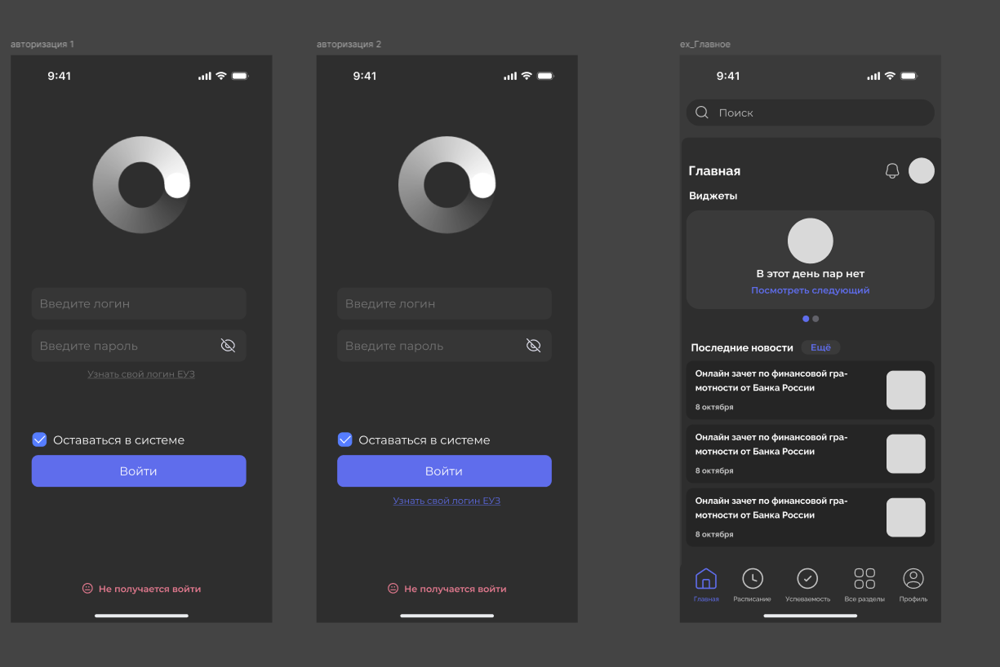
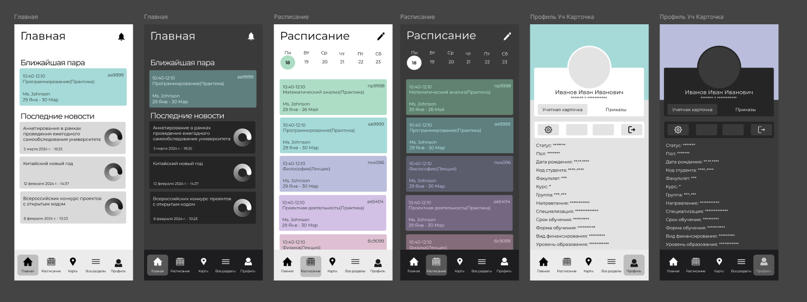

О проекте
Актуальность и проблематика
Создание мобильного приложения личного кабинета для Московского Политехнического Университета на платформе iOS позволит студентам получить удобный доступ к учебным материалам, расписанию и другим важным функциям прямо со своих iPhone.
Цель проекта
Создать первые функции и обновить дизайн приложения личного кабинета Мосполитеха для пользователей iOS на базе языка программирования SwiftUI.
Основные задачи
- Изучить разработки, сделанные предыдущей командой
- Найти и изучить учебные материалы для расширения возможностей команды
- Обновить дизайн экранов с сохранением корпоративной стилистики
- Изучить данные, поступающие через API от личного кабинета студента
- Сверстать экраны, подготовленные дизайнерами
- Написать скрипты для использования и отправки данных API


Этапы реализации
1. Анализ и изучение материалов
Изучение предыдущих наработок, документации и API университета
2. Планирование и распределение обязанностей
Формирование команд и постановка задач
3. Подготовка среды для разработки
Настройка Xcode, Git и других инструментов
4. Выполнение поставленных задач
Разработка интерфейсов и интеграция с API
5. Оценка работы и планирование следующего этапа
Тестирование и составление плана на следующий семестр